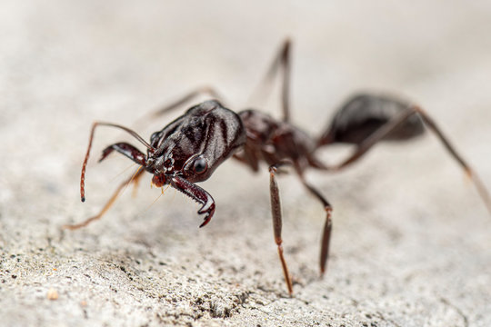
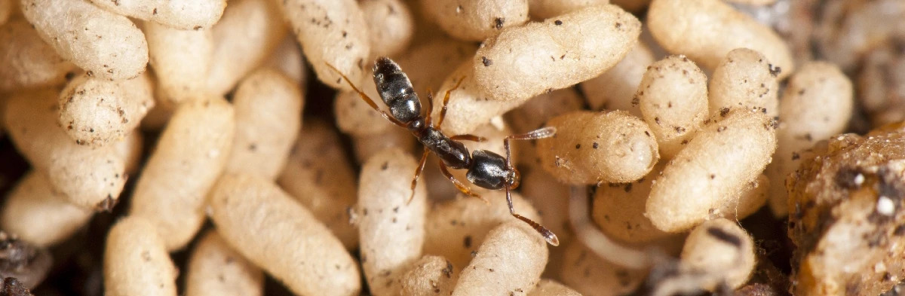

Назад на главную
Ponerinae Lepeletier, 1836 - понерины
Довольно примитивная группа муравьев по своему строению и поведению. Рабочие мономорфны, самки по размерам близки к рабочим.
Поведение понерин слабо специализировано: в основном это плотоядные муравьи, охотящиеся за мелкими почвенными насекомыми и другими членистоногими. Черты примитивности присущи и способу образования гнезд. Самка сбрасывает крылья, откладывает яйца и в течение всего развития кормит личинок мелкими насекомыми, добывая пищу вне гнезда и покидая расплод на время добычи пищи (самки продвинутых подсемейств выкармливают личинок секретом, образующимся при расщеплении питательных веществ, содержащихся в крыловых мышцах). За редким исключением образуют мелкие семьи и ведут скрытый образ жизни в почве или гнилой древесине, не показываясь на поверхности.
Брюшко с 1-члениковым стебельком и перетяжкой между 1-м и 2-м сегментами. Жало хорошо развито. Средние и задние голени зачастую с гребенчатыми шпорами. У самок и самцов большинства родов передние крылья типичные для муравьев, с 4 замкнутыми ячейками. Личинки несовершенны, обычно с волосками или бугорками, с крупными зубчатыми, сильно склеротизованными жвалами. Куколки в жестких коричневатых коконах.
